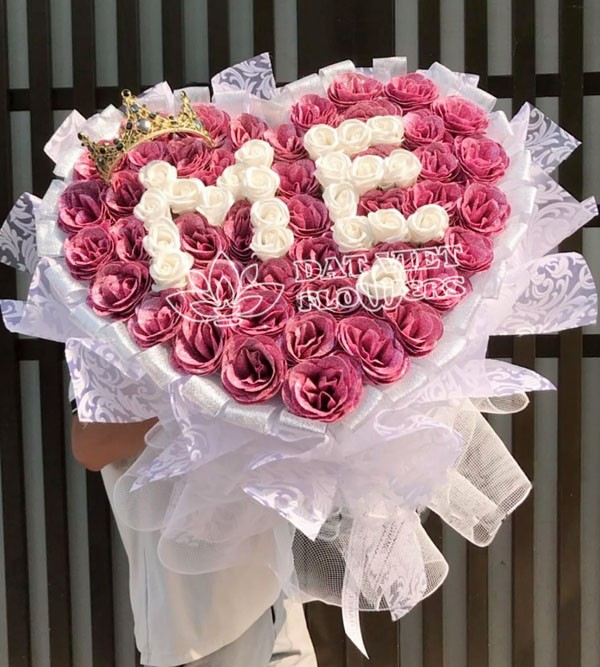
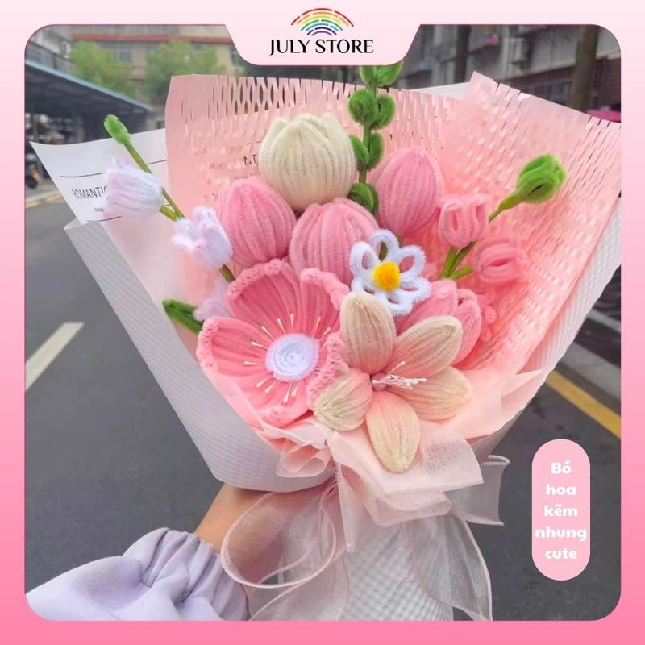
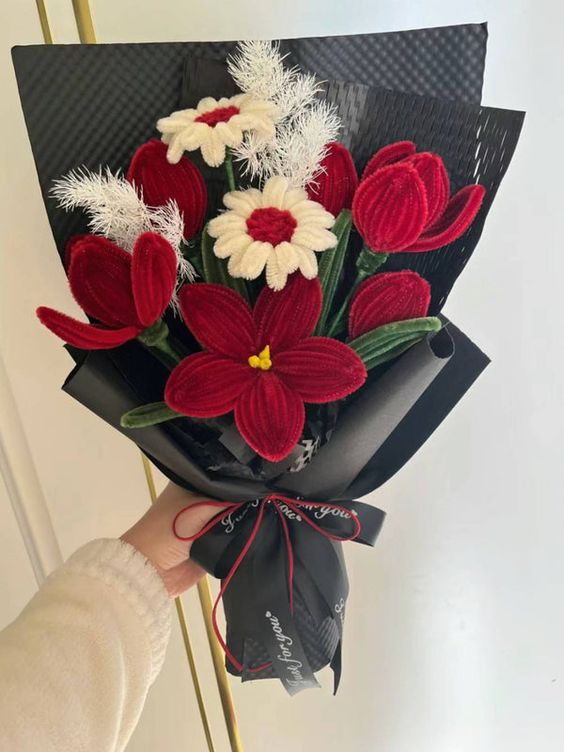

Trong ngày sinh nhật của mẹ, sẽ chẳng có gì tuyệt vời hơn khi được ở bên gia đình. Chắc chắn với mẹ, không có bất cứ món quà nào giá trị hơn được ở bên chồng con vào ngày này. Nếu chưa thể nghĩ ra được món quà gì để tặng mẹ trong ngày sinh nhật, hãy để FLOHAN giúp bạn gửi lời chúc hay nhất tới mẹ cùng một bó hoa tươi.
Không gò bó trong những mẫu hoa thông thường, mỗi bó hoa được làm tặng mẹ trong ngày sinh nhật tại shop luôn thể hiện được tình yêu của bạn dành cho mẹ. Ngoài những mẫu hoa có sẵn, nhân viên của FLOHAN sẽ tư vấn cho bạn những kiểu cắm hoa độc đáo dành riêng cho mẹ bạn.
Một vài sản phẩm minh họa của chúng mình



Dịch vụ đặt hoa tặng mẹ toàn quốc. Bên cạnh đó, chúng tôi cũng giúp bạn chọn được loại hoa phù hợp với tính cách, sở thích… của mẹ bạn. Đây sẽ là bó hoa tặng mẹ trong ngày sinh nhật được tạo nên từ chính sự quan tâm và tình yêu của bạn.
Hiểu được rằng bạn muốn dành cho mẹ một bó hoa đẹp và ý nghĩa nhất, nhất là bó hoa sinh nhật mẹ, shop sẽ nhiệt tình tư vấn với kiểu cắm và loại hoa phù hợp nhất. Chắc chắn rằng trước khi hoa được gửi đến mẹ, chúng tôi sẽ để bạn “duyệt” trước.